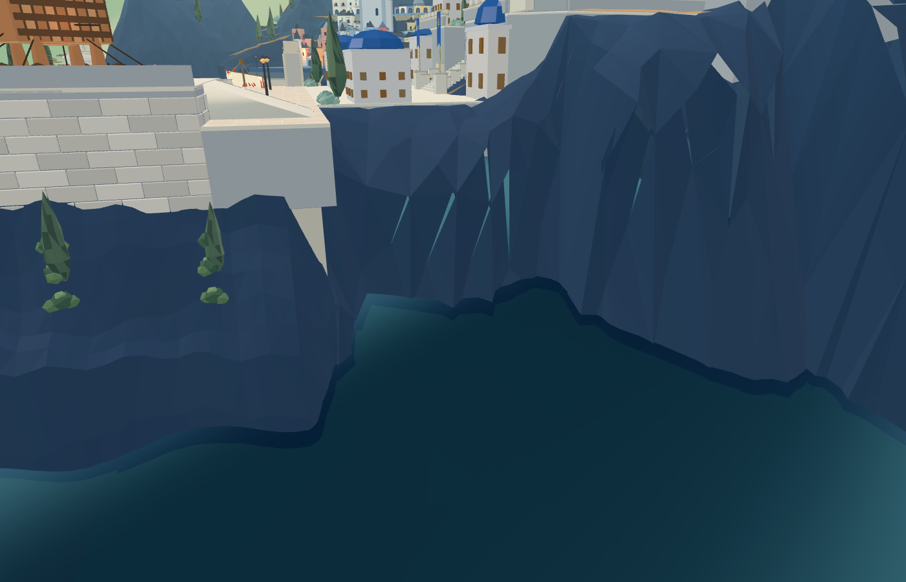
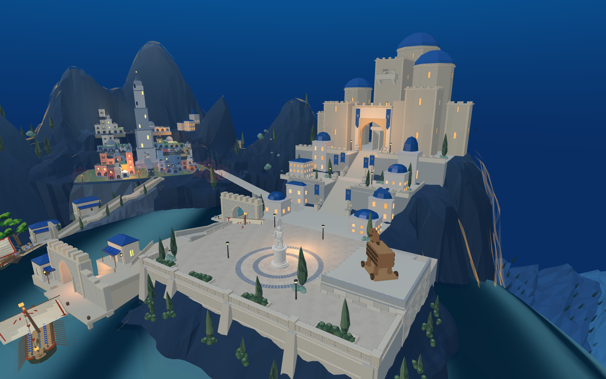
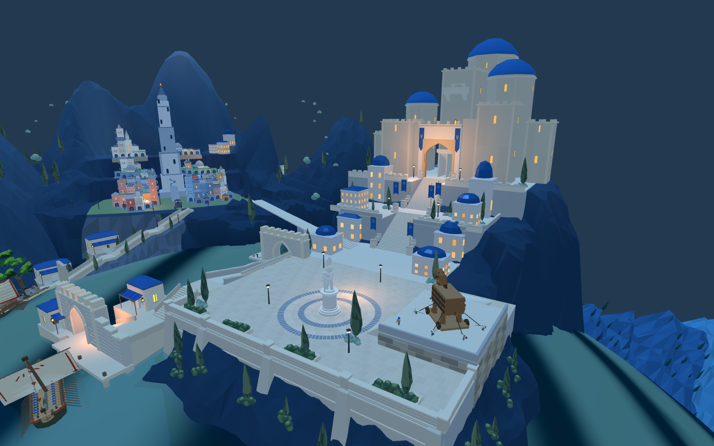
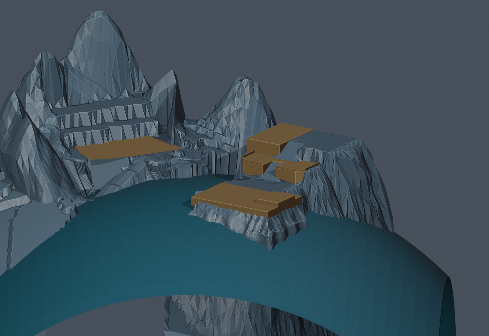

当前候选为R06：包含新城中上层侧坡、旧城空余地块外围的过渡坡面，并修复横向展开造成的网格折叠。保留广场前侧岩肩。R02扩展过大、掩埋部分原植被，已否决。候选尚未成为默认地形；同一Godot工程已导入，并以临时装配完成原短剑兵通行测试。
R05近景出现重复顶点分离裂口，已否决。R06联动340个重复顶点，消除28处投影翻折/近退化面，同位置重复顶点分离为0。下方为同机位近景，尚不代表整体山势验收。


前港至广场、广场至主堡路线共1,353处中心线采样，修改前后在0.4米及1.4米高度的前向射线均未撞到本轮岩面。这不替代全装备人物、建筑、植被和Godot通行测试。旧城阶坎、整体山脊与目标仍未收口。
旧城184个带层级的WFC占地记录共920处中心与角点，支撑高度在修改前后保持一致。27处折叠及1处近退化投影面，经局部减小横向位移后不再出现。此检查不证明整个场景已达目标，Godot原短剑兵从广场到塔顶559段通过；这不包含船舶、完整战斗或所有路线。81处已登记植被根部间距与基线一致。实际水线和其他植被仍需检查。

候选资产已导入，测试专用装配替换两块岩面后完成原短剑兵559段行进，普通场景尚未切换。整个测试及截图过程每次只运行一个Godot进程，结束自动退出。
这是从8931实际场景提取的现状，并非改造完成图。蓝灰色为岩面，褐色为选取的现有建设台基；蓝色曲面按原游戏海面高度采样，只用于判断露出水面的山脚。

这份底稿没有改写默认游戏，也没有替换Godot地形。下一步是基于此工程制作地形候选，并补回建筑和实际通路检查。尚未完成筑山阶段。